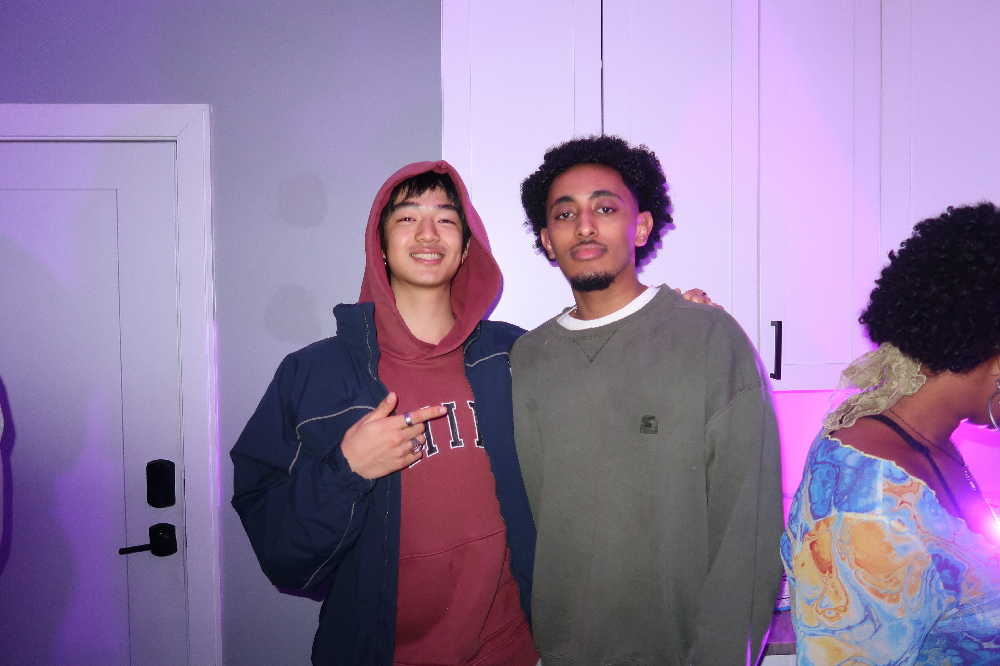
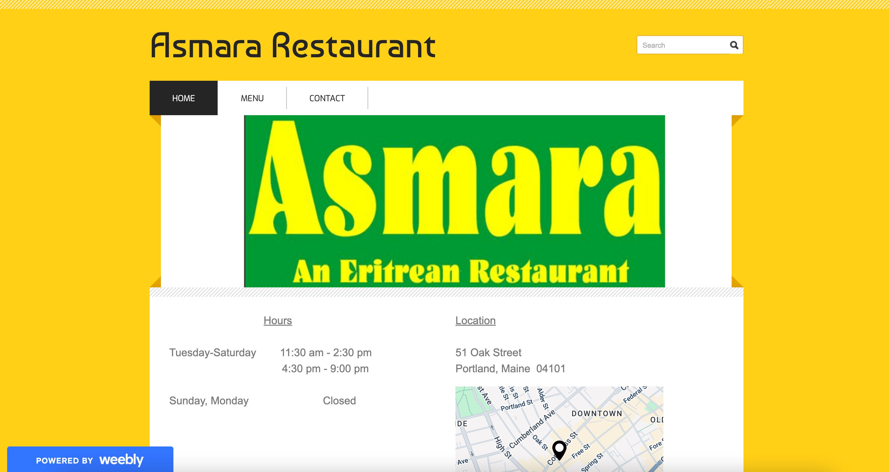
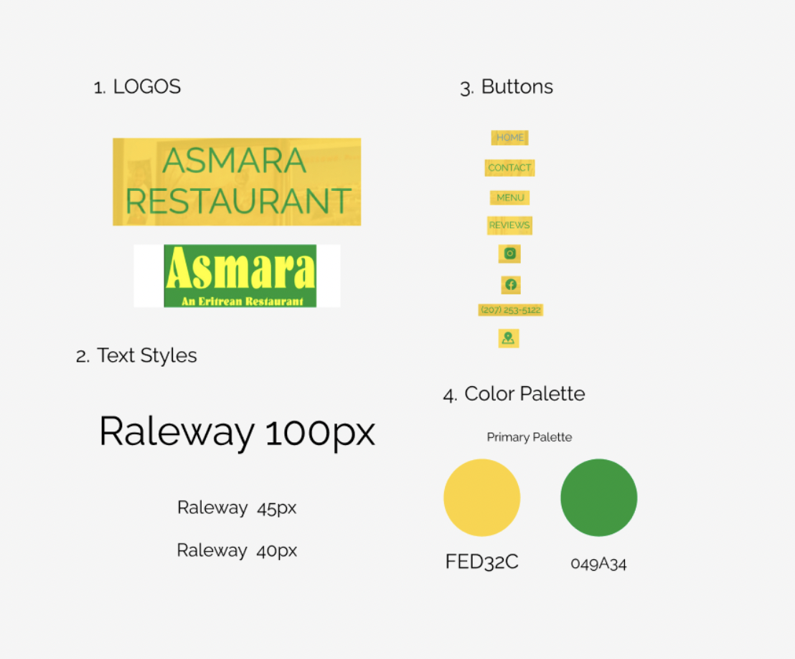
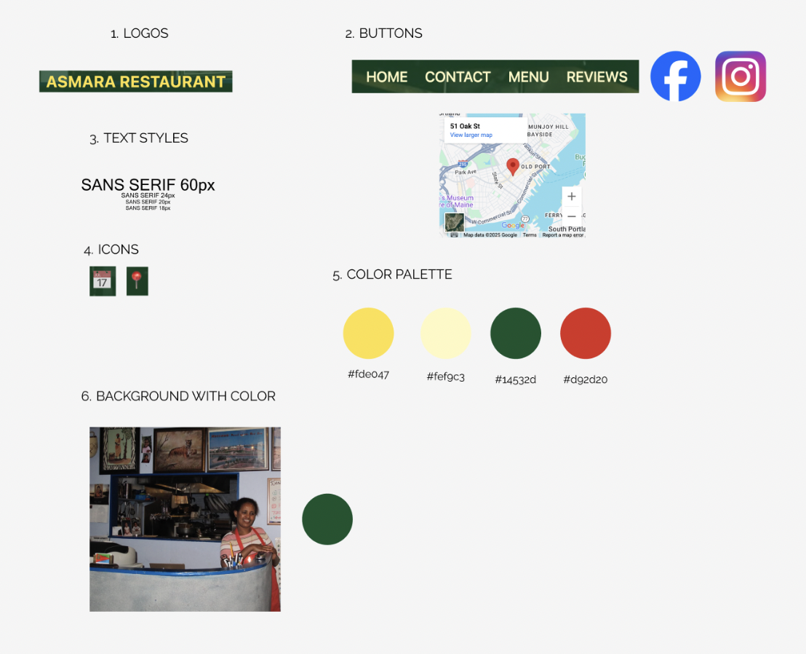
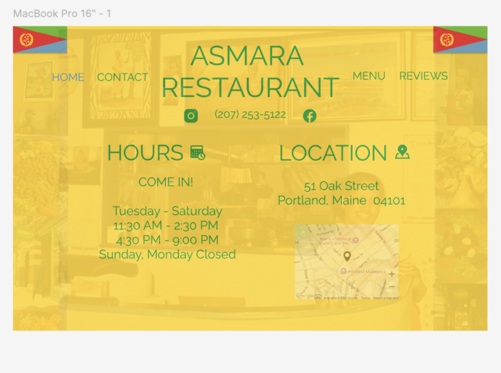
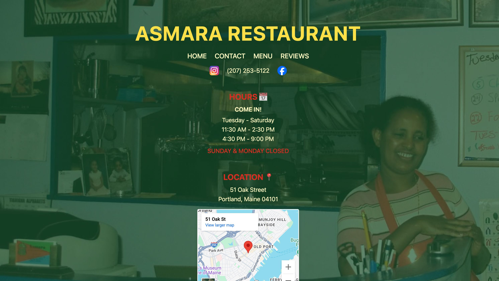

01Role & Team

This started as a solo project for my UI/UX class. I did all of it: the content, the branding, the design and the HTML/CSS. Later, Nahum, our friend Yabeke and I turned it into the restaurant’s real website.
It’s probably the project I care about most, because I knew the people it was for.
02Context & Problem

The old site was a generic template. It didn’t show any of what makes Asmara special: the family, the culture, the food. Nahum grew up working at the restaurant, so I asked him what bugged him about the site. We landed on four main problems:
Hard to find info
Hours, menu and contact info were buried or missing.
Confusing
The search bar and some labels didn’t make sense.
Forgettable
No story or personality, just placeholder content.
Hard to read
Low contrast, no alt text, and messy page structure.
Make the website feel as welcoming as walking into the restaurant.
03Research
I looked at other local restaurant websites to see what they did well. The good ones made the basics easy to find but still had some personality.
I also interviewed Nahum about what customers actually care about. Mostly they want to find the hours and menu fast, but they also like knowing the story behind the place.
The people using the site are mostly neighbors, the Eritrean community, and people looking for somewhere new to eat. It had to feel trustworthy and warm right away.
04Process
Reworking the style guide
My classmates critiqued my first style guide, and most of the feedback was about contrast and consistency. I redid it with stronger contrast and colors that felt more like the restaurant.


Feedback on the first build
I also brought my first HTML/CSS draft to a critique session. After that I fixed the spacing, made the headings and text sizes clearer, and made the whole thing feel friendlier.

05Solution
The final site fixes the problems I found:
- Hours, menu and contact info are right at the top
- Higher contrast and easier-to-read text
- Real photos of the restaurant, and its story

06Learnings
Building this for people I know made me care about every small detail. I got a lot better at HTML/CSS, and I learned to try things quickly instead of overthinking them.
The biggest lesson: the design got better once I stopped thinking about what looked cool and started from what Nahum’s family actually needed.